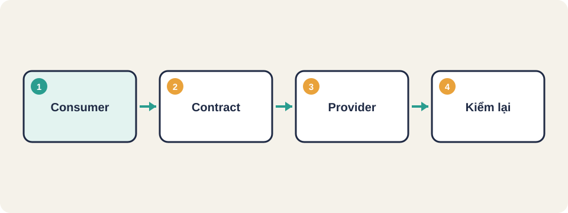
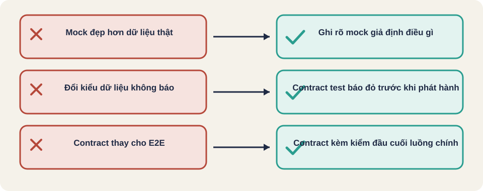

Hình vẽ gốc, dùng để minh họa thứ tự các bước chính của bài.
Kiểm dịch vụ qua giao diện HTTP, giả lập dịch vụ chưa sẵn sàng bằng mock, và dùng contract testing để hai bên không lệch nhau khi một bên đổi.

Hình vẽ gốc, dùng để minh họa thứ tự các bước chính của bài.
Nhóm bạn làm dịch vụ đặt hàng. Dịch vụ kho do nhóm khác làm và chưa xong. Bạn vẫn muốn kiểm luồng đặt hàng. Làm thế nào, và làm sao biết khi nhóm kho đổi kiểu dữ liệu thì dịch vụ của bạn sẽ hỏng?
Kiến thức chung, viết lại bằng lời của người soạn bài.
Kiến thức chung, viết lại bằng lời của người soạn bài.
Mock server là một máy chủ giả, trả về phản hồi đã định sẵn. Dùng khi bên kia chưa sẵn sàng. Rủi ro: mock trả về dữ liệu đẹp hơn thật, nên luồng vẫn pass dù thật sự hỏng. Mỗi mock cần ghi rõ nó giả định điều gì.
Kiến thức chung, viết lại bằng lời của người soạn bài.
Thuật ngữ trong slide này: Mock server: Máy chủ giả trả về phản hồi định sẵn, dùng khi dịch vụ thật chưa sẵn sàng.
Kiến thức chung, viết lại bằng lời của người soạn bài.
Thuật ngữ trong slide này: Contract testing: Kiểm rằng hai bên của một giao diện vẫn thống nhất về trường và kiểu dữ liệu. · Consumer và provider: Consumer là bên tiêu thụ dữ liệu; provider là bên cung cấp dữ liệu qua giao diện.
Consumer mong đợi: { "gia": số }
Provider bản mới trả: { "gia": "120000" }
Kết quả: contract test ĐỎ, dù luồng tích hợp chưa chạy tới đó
Sửa: provider giữ số, hoặc hai bên thống nhất đổi và cập nhật hợp đồngThuật ngữ trong slide này: Consumer và provider: Consumer là bên tiêu thụ dữ liệu; provider là bên cung cấp dữ liệu qua giao diện.
Kiến thức chung, viết lại bằng lời của người soạn bài.
API lấy thông tin sản phẩm trả về mã, tên (chuỗi), giá (số), còn hàng (đúng/sai). Hãy viết contract ngắn gọn cho bên tiêu thụ, và liệt kê ba thay đổi ở bên cung cấp sẽ làm contract đỏ.
Với contract gồm n trường, có bao nhiêu trường mà kiểu thực tế không khớp kiểu mong đợi? Hãy viết cách đếm bằng từng bước.

API
Mock server
Contract testing
Consumer và provider